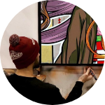

HAROW
M. Lemercier
Je promeus ce mois-ci @Harow.
Ce mois-ci, c’est un artiste pur que je vais vous présenter.
Harow dessine ses oeuvres sur un tableau, à l’ancienne, en physique.
Les personnages sont dessinés à partir du torse, dans des couleurs assez flashis.
Le visuel final est soigné, il y a un gros travail sur les détails, d’ombre, de texture. On peut noter à cela la patte du dessinateur sur les sourires, les expressions qui ressemblent vraiment au manga original.
Harow a un shop dans lequel on peut retrouver tous ses portraits à 150€. Il vend également ses oeuvres originales de temps en temps. Soyez à l’affut!
Je vous laisse ci-contre quelques unes de ses oeuvres, son instagram & son shop.
Au plaisir pour un nouveau focus :)
Décembre 2020